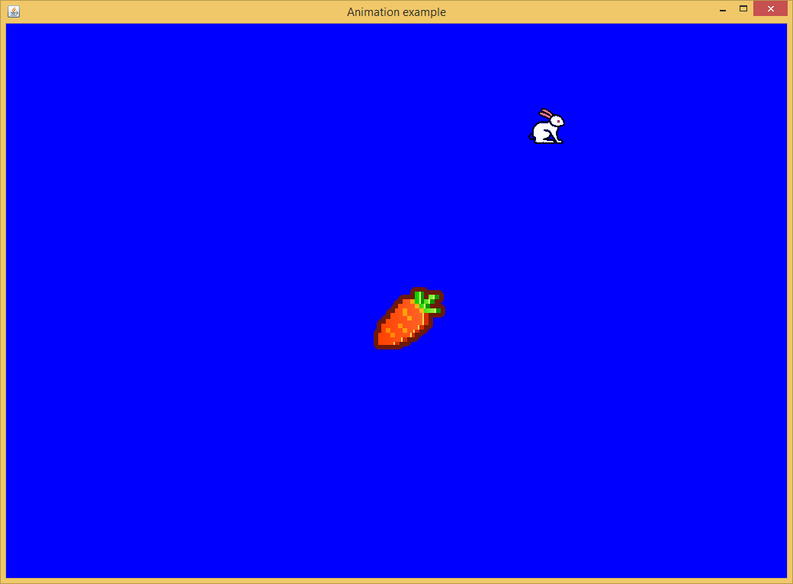

本質上，MFP遊戲是一個命令行程序。它有一個入口點，也就是一個函數調用。該函數通過調用open_screen_display函數來啟動遊戲的主窗口。此窗口將出現在命令行對話窗口的前面。開發人員可以設置其標題，背景色，大小（僅在JVM上，在Android中始終覆蓋整個屏幕）和橫放還是豎立（僅限於Android）。此窗口將顯示動畫並接受用戶的鼠標（或如果在Android中就是手指）的輸入。如果開發人員希望閱讀其使用詳細信息，請在命令行對話窗口中鍵入help open_screen_display並回車。
open_screen_display返回一個窗口的句柄。該句柄是所有和該窗口相關的計算的起點。例如，以該句柄作為參數，可以通過調用get_display_size返回窗口大小，可以通過調用calculate_text_origin來計算文本的位置。此外，它還接受由繪圖函數，例如draw_text和draw_oval，觸發的繪畫事件。也可以通過以它為參數調用pull_event函數來提取用戶界面事件，例如鼠標移動。
更新主窗口意味著在窗口上重新繪制全部或部分圖像。顯然，如果遊戲需要非常復雜的動畫，將圖像改變的部分定界以重繪將是一項不可能完成的任務。重繪整個圖像是唯一的選擇。但是，直接寫入屏幕的速度非常慢。為了最大程度地減少直接屏幕寫入，MFP在內存中緩沖屏幕的鏡像，並在緩沖的鏡像上繪制或者重繪元素。繪制完整個幀後，MFP然後將鏡像投到屏幕上。這意味著一幀只需要寫入屏幕一次。
上述方法可以避免在一幀中多次寫屏幕。但是重畫緩沖圖像仍然不容易。例如，如果圖像中有兩個實心圓，一個靜止，一個運動。在下一幀中，運動的圓移動到靜止的圓的後方時，如何繪制圖像？
MFP的解決方案是為每個要繪制的元素，例如一條線，一個橢圓形或一個圖像，使用繪畫事件。繪畫事件有一個所有者用於告訴繪畫事件調度程序誰擁有此繪畫事件。繪畫事件的所有者可以是字符串（即所有者名稱），整數（即所有者ID）或NULL（表示系統擁有它），或者一個擁有兩個元素的數組。第一個元素可以是基於字符串的所有者名稱，也可以是基於整數的所有者ID，當然也可以是NULL。第二個元素是一個模仿時標的浮點數值。請註意，該浮點數不一定必須是真實的時標，它可以是任何雙精度值。當開發人員嘗試從繪畫事件調度程序中刪除此事件時，將使用它。
如果開發人員調用繪圖函數，例如draw_line，draw_text或draw_rect，繪畫事件所有者應作為函數的第一個參數傳入。該函數不執行任何繪畫工作。而是將其繪畫事件掛接到主窗口的繪畫事件隊列中。在為此幀圖像調用完所有相關繪畫函數之後，開發人員應調用update_display函數。此函數以先到先服務的順序將繪畫事件隊列中的所有元素繪制到緩沖的圖像中，然後將緩沖的圖像發布到主窗口中。
繪畫事件隊列的大小是無限的。如果沒有從隊列中丟棄繪畫事件，則隊列將不僅包括該幀的所有事件，還包括先前幀的所有事件。動畫實現的關鍵是drop_old_painting_requests函數。此函數能從繪畫事件隊列中刪除選定的繪畫事件。此函數有兩個參數。第一個是所有者信息，第二個是主窗口句柄。刪除一個繪畫事件的條件是，如果繪畫事件的所有者與drop_old_painting_requests的所有者信息參數相同，並且繪畫事件的所有者的時標早於drop_old_painting_requests的所有者信息的時標（即更小），則繪畫事件將被丟棄。請註意，有時所有者參數不包含時標。在這種情況下，時標是繪圖函數或drop_old_painting_requests函數被調用時的系統時間。
因此，要繪制動畫，在開發人員調用繪圖函數之後，必須在update_display函數調用之前先調用drop_old_painting_requests函數。只有這樣，新一幀的事件才會繪制在主窗口上。開發人員還可以調整drop_old_painting_requests函數的owner參數的時標來實現某些效果，例如顯示遊戲角色的移動軌跡。
完成一幀的繪制後，別忘了先睡一會兒再進行下一次叠代，也就是調用一次sleep函數。否則，系統資源將被耗盡。
以下代碼是在主窗口中繪制兩個實心圓的動畫的示例，一個是靜態的，而另一個則圍繞它旋轉。
function rotate_around()
// open a screen display window for animation.
// 為動畫打開一個顯示窗口。
variable DISPLAYSURF = open_screen_display("Animation example", [255, 0, 0, 255], true, [1024, 728], true)
// we still need to get main window's size because if in Android, the window size set by open_screen_display
// has no effect. In this case main game window always take the whole screen.
// 我們還是需要獲取遊戲主窗口的尺寸。這是由於，如果是在安卓上運行，open_screen_display函數設置的窗口尺寸起不到任何作用，遊戲
// 主窗口總是覆蓋整個屏幕。
variable displaySize = get_display_size(DISPLAYSURF)
variable displayWith = displaySize[0], displayHeight = displaySize[1]
variable idxOfFrame = 0 //index of frame //幀的索引
// as circlel is static and it is not overlapped by other elements nor overlaps any other elements, draw_oval
// is only called once for it. This call will create a painting event for circle1 and this painting event will
// be executed by the update_display function each time it is called.
// 由於1號圓是不動的，並且它和別的圖形沒有重疊，所以只需要為它調用draw_oval函數一次。這個draw_oval函數調用將會生成一個繪圖事件，
// 該繪圖事件用於繪制1號圓，該繪圖事件在每次update_display函數調用的時候都會被觸發。
draw_oval("circle1", DISPLAYSURF, [displayWith / 2 - 32, displayHeight / 2 - 32], 64, 64, [255, 255, 0, 0], 0)
// circle1 has been in the centre of the screen, now make circle 2 rotate around circle 1
// 1號圓現在位於屏幕中央，我們讓2號圓圍著1號圓轉
variable circle1To2Distance = 200
variable currentAngle = 0
while true
variable giEvent = pull_event(DISPLAYSURF)
if and(giEvent != Null, get_event_type_name(giEvent) == "GDI_CLOSE")
// quit // 遊戲退出事件
break
endif
circle1To2Distance = 100 * (2 + sin(idxOfFrame * pi/180))
variable x2 = displayWith / 2 + circle1To2Distance * cos(currentAngle * pi/180)
variable y2 = displayHeight / 2 + circle1To2Distance * sin(currentAngle * pi/180)
variable angularVelocity = (1000000 / circle1To2Distance ** 3) * 5 // angular velocity in degree //角速度
currentAngle = currentAngle + angularVelocity
draw_oval(["circle2", idxOfFrame], DISPLAYSURF, [x2 - 24, y2 - 24], 48, 48, [255, 0, 255, 0], 0)
drop_old_painting_requests(["circle2", idxOfFrame], DISPLAYSURF)
update_display(DISPLAYSURF) // update game display window // 更新遊戲顯示窗口
// sleep a while to avoid exhausting computing resources. Note that in Android systems with weak CPU
// the sleeping interval should be shorter to give more time for game computing.
// 睡一會兒，避免占用所有的CPU資源，讓別的進程得以有機會工作。註意有的安卓系統的CPU不是很強勁，睡眠的時間就需要更短一些
// 這樣用於遊戲計算的時間就可以更多一些。
sleep(100)
idxOfFrame = idxOfFrame + 1
loop
endf
以上示例代碼演示了如何在主遊戲窗口中繪制動畫。但是，它不涉及遊戲窗口和玩家之間的任何交互。如果開發人員想要對玩家的輸入做出反應，則代碼必須在啟動主窗口後進入玩家事件處理模式。這是一個無限循環，直到玩家退出遊戲為止。在每個循環中，應該調用pull_event函數從事件隊列中返回一個事件，如果沒有可用的事件，則返回null。如果是鼠標或手指事件，代碼將通過更新主窗口來響應該事件。請註意，在現階段還不支持鍵盤事件。有關pull_event函數的詳細信息，請在命令行框中簡單鍵入help pull_event。
通過pull_event函數獲得玩家輸入事件後，開發人員需要調用get_event_type函數來確定事件的類型。在現階段，get_event_type函數支持以下事件：GDI_INITIALIZE（創建遊戲窗口時觸發，類型為1），GDI_CLOSE（關閉遊戲窗口時觸發，類型為10），WINDOW_RESIZED（當遊戲窗口調整大小時觸發，僅限於JVM平臺，類型為21），POINTER_DOWN（在PC中按下鼠標按鈕或在Android中按下用戶的手指時觸發，類型為102），POINTER_UP（在PC中當鼠標按鈕彈起時或用戶的手指從Android的觸摸板移開時觸發，類型為103），POINTER_CLICKED（在PC中當用戶點擊鼠標時或在帶有觸摸屏的設備中用戶的手指點擊觸摸板時觸發，類型為104），POINTER_DRAGGED（當用戶拖動手指或鼠標時觸發，類型為105。註意此事件與POINTER_SLIDED事件不同，它在拖動過程中是連續觸發的），POINTER_SLIDED（當用戶將手指或者鼠標拖拽到目標位置並釋放手指或鼠標按鈕時觸發，類型為106。與POINTER_DRAGGED不同，此事件觸發是一次性的），POINTER_PINCHED（當用戶同時捏放兩根手指時觸發，僅適用於Android，類型為201）。
開發人員必須通過代表事件類型的整數找到對應的事件類型。比如如下語句
get_event_type(giEvent) == 106
用於判斷是否玩家輸入的事件類型是106，也就是POINTER_SLIDED。很顯然，通過整數數值比較來判斷事件類型不是一個很好的辦法，所以，推薦使用函數get_event_type_name，該函數返回代表事件名稱的字符串。對於上述例子，作為替換我們可以使用以下代碼
get_event_type_name(giEvent) == "POINTER_SLIDED"
來鑒定事件類型是否是POINTER_SLIDED。
玩家輸入事件除了帶給開發人員事件的類型之外，還可以提供額外的信息，即事件的屬性。額外的信息存儲在類似字典的結構中，可以通過調用get_event_info函數來提取。此函數有兩個參數，第一個是事件對象，第二個是額外信息的鍵值。不同的事件類型具有不同的額外信息。例如，POINTER_SLIDED事件攜帶五條額外信息，它們對應的鍵分別是"button"，"x"，"y"，"last_x"和"last_y"。開發人員可以鍵入help get_event_info來找出每種事件類型的額外信息是什麽。
以下代碼是一個示例，展示了如何通過用戶的鼠標或手指的滑動來移動屏幕上的一個實心圓。它僅處理POINTER_SLIDED事件。但是其他事件處理方式應該是相似的。
function slide_pointer()
// open a screen display window for animation.
// 為動畫打開一個顯示窗口。
variable DISPLAYSURF = open_screen_display("Animation example", [255, 0, 0, 255], true, [1024, 728], true)
// we still need to get main window's size because if in Android, the window size set by open_screen_display
// has no effect. In this case main game window always take the whole screen.
// 我們還是需要獲取遊戲主窗口的尺寸。這是由於，如果是在安卓上運行，open_screen_display函數設置的窗口尺寸起不到任何作用，遊戲
// 主窗口總是覆蓋整個屏幕。
variable displaySize = get_display_size(DISPLAYSURF)
variable displayWith = displaySize[0], displayHeight = displaySize[1]
variable idxOfFrame = 0 //index of frame //幀的索引
variable circle1Left = displayWith / 2 - 32, circle1Top = displayHeight / 2 - 32
variable circle2Left = displayWith / 2 + 172, circle2Top = displayHeight / 2 - 255
draw_oval(["circle2", idxOfFrame], DISPLAYSURF, [circle2Left, circle2Top], 48, 48, [255, 0, 255, 0], 0)
draw_oval(["circle1", idxOfFrame], DISPLAYSURF, [circle1Left, circle1Top], 64, 64, [255, 255, 0, 0], 0)
while true
variable deltaX = 0, deltaY = 0
variable giEvent = pull_event(DISPLAYSURF)
if and(giEvent != Null, get_event_type_name(giEvent) == "GDI_CLOSE")
// quit // 遊戲退出事件
break
elseif and(giEvent != Null, get_event_type(giEvent) == 106) // mouse or finger slided // 鼠標或手指滑動事件
// x1 and y1 are the coordinate when sliding starts, x2 and y2 are the coordinate when sliding finishes
// x1和y1是滑動開始時的坐標位置，x2和y2是滑動結束時的坐標位置
variable x1 = get_event_info(giEvent, "last_x")
variable y1 = get_event_info(giEvent, "last_y")
variable x2 = get_event_info(giEvent, "x")
variable y2 = get_event_info(giEvent, "y")
deltaX = x2 - x1
deltaY = y2 - y1
//print_line("x1 = " + x1 + " y1 = " + y1 + " x2 = " + x2 + " y2 = " + y2 + " deltaX = " + deltaX + " deltaY = " + deltaY)
circle2Left = circle2Left + deltaX
circle2Top = circle2Top + deltaY
// draw circle 2 first, then circle 1, this ensures that circle 1 is in front of circle 2.
// 先畫2號圓，再畫1號圓，這樣可以保證1號圓在2號圓的前面。
draw_oval(["circle2", idxOfFrame], DISPLAYSURF, [circle2Left, circle2Top], 48, 48, [255, 0, 255, 0], 0)
draw_oval(["circle1", idxOfFrame], DISPLAYSURF, [circle1Left, circle1Top], 64, 64, [255, 255, 0, 0], 0)
drop_old_painting_requests(["circle2", idxOfFrame], DISPLAYSURF)
drop_old_painting_requests(["circle1", idxOfFrame], DISPLAYSURF)
endif
update_display(DISPLAYSURF) // update game display window // 更新遊戲顯示窗口
// sleep a while to avoid exhausting computing resources. Note that in Android systems with weak CPU
// the sleeping interval should be shorter to give more time for game computing.
// 睡一會兒，避免占用所有的CPU資源，讓別的進程得以有機會工作。註意有的安卓系統的CPU不是很強勁，睡眠的時間就需要更短一些
// 這樣用於遊戲計算的時間就可以更多一些。
sleep(30)
idxOfFrame = idxOfFrame + 1
loop
endf
除源代碼以外遊戲通常包含許多圖像和聲音文件。MFP提供了用於加載圖像（即load_image ）和播放聲音（即play_sound ）的函數。如果要在JVM上玩遊戲，開發人員只需告訴這些功能文件的路徑即可。但是，在Android中，情況則非常不同。
在Android中MFP遊戲會在兩種不同的情況下運行。一種類似於在JVM上，輔助文件保存在Android設備的ROM中，該ROM與PC的硬盤相對應。在這種情況下，代碼僅需要文件的路徑。在另一種情況下，MFP遊戲已編譯為APK包。這時，輔助文件將保存在APK包assets資料夾中的resource.zip包中，如下圖所示。MFP需要使用一組函數從assets資料夾的壓縮資源包中加載數據。它們是load_image_from_zip和play_sound_from_zip。要了解這些函數的用法，只需在MFP命令行框中鍵入help，然後輸入函數名稱即可。
但是，Android APK的復雜性在運行應用之前就存在。Android APK是已編譯的MFP腳本。MFP編譯器不知道腳本需要哪些輔助文件以及將文件放置在何處。因此，開發人員需要將該信息顯式傳遞給MFP編譯器。這可以通過使用MFP標註@build_asset和函數copy_to_resource來實現。copy_to_resource是MFP編譯器函數，這意味著它不在mfp引用空間中，而在mfp_compiler引用空間中。在運行時，mfp_compiler引用空間不在默認的引用空間棧中，因此函數copy_to_resource不可見。但是，在構建APK時，標註可以看到mfp_compiler引用空間。
函數copy_to_resource具有兩個參數。第一個參數是遊戲輔助文件或文件夾的源路徑。請註意，如果遊戲作為MFP應用運行，則輔助文件的源路徑不再是字符串，因為該文件實際上已壓縮在APK的資源包中。在這種情況下，輔助文件的源路徑是一個三元素數組，第一個元素是zip類型，如果是APK包中的assets資料夾中的resource.zip壓縮包，則為1，否則為0。第二個元素是資源壓縮包，即assets資料夾中的resource.zip文件，的路徑，第三個元素是資源壓縮包中的輔助文件的壓縮路徑。函數copy_to_resource的第二個參數是遊戲輔助文件或文件夾的目標路徑。如果腳本將要被打包在安卓APK中，則目標路徑是APK包assets資料夾中resource.zip文件中的壓縮路徑。要查看@build_asset和copy_to_resource的詳細用法，只需鍵入help @build_asset和help ::mfp_compiler::annotation::build_asset::copy_to_resource（copy_to_resource必須包含其整個引用空間路徑，因為引用空間mfp_compiler不在默認引用空間棧中）。
當遊戲需要跨設備運行時，例如兩個玩家使用不同的設備玩同一個遊戲，標註@build_asset也是必需的。這和打包APK是相同的邏輯。該代碼告訴MFP編譯器哪些輔助文件或文件夾需要復制到遠端，以及目標路徑是什麽。由於MFP專門為每個遠程會話（或者用MFP術語，沙盒）創建一個臨時文件夾，因此開發人員需要調用函數get_sandbox_session_resource_path來獲取臨時文件夾中資源文件夾的路徑，然後添加上相對資源文件夾的目標路徑，如下圖所示。要查看函數get_sandbox_session_resource_path的詳細用法，只需在MFP命令行框中鍵入help get_sandbox_session_resource_path。
以下代碼段演示了如何正確地將輔助文件（即food.png）復制到目標位置，以及如何在運行時加載輔助文件。請註意，作為標註，@build_asset語句在編譯時執行，即當我們從MFP腳本構建APK包或MFP腳本正在發送源代碼和輔助文件到遠程設備時執行。另請註意，@build_asset語句很長，因此使用MFP的換行符（空格後跟下劃線字符）將其分為三行。
@build_asset語句調用函數iff來處理三種情況不同的情況。首先是編譯發生在遠程會話（MFP術語中的沙盒）中。當遠程會話啟動另一個遠程會話，從而需要將輔助文件傳輸到新的遠程會話時，可能會發生這種情況。在這種情況下，函數is_sandbox_session()返回true，並且輔助文件必須位於臨時目錄的資源子文件夾中，該資源子文件夾的路徑由函數 get_sandbox_session_resource_path()返回。第二種情況是在MFP應用程序中進行編譯。當MFP應用啟動遠程會話並準備傳輸輔助文件時，就是這種情況。在這種情況下，函數is_mfp_app()返回true。同樣，如上所述，這種情況下的源路徑不是字符串，而是一個三元素數組。數組的第一個元素為1，表示源輔助文件位於Android應用的APK中。第二個元素是一個函數調用，即get_asset_file_path("resource")，它返回Android應用程序assets資料夾中resource.zip文件的路徑。最後一個元素是源輔助文件在android應用程序assets資料夾中resource.zip壓縮包中的壓縮路徑。第三種情況是，當MFP腳本在JVM或Android作為獨立腳本（即，不是作為Android應用程序）運行時進行編譯。因為在此示例中，輔助文件在這種情況下與源腳本位於同一文件夾中，所以調用函數get_src_file_path()返回源腳本的完整路徑，然後調用函數get_upper_level_path獲取包含源腳本和輔助文件的文件夾的路徑。要想獲取iff函數的詳細信息，可以在命令行中鍵入help iff並回車。
@build_asset copy_to_resource(iff(is_sandbox_session(), get_sandbox_session_resource_path() + "images/food.png", _
is_mfp_app(), [1, get_asset_file_path("resource"), "images/food.png"], _
get_upper_level_path(get_src_file_path()) + "food.png"), "images/food.png")
if is_sandbox_session()
foodImage = load_image(get_sandbox_session_resource_path() + "images/food.png")
elseif is_mfp_app()
foodImage = load_image_from_zip(get_asset_file_path("resource"), "images/food.png", 1)
else
foodImage = load_image(get_upper_level_path(get_src_file_path()) + "food.png")
endif
@build_asset語句之後的代碼在運行時執行。相似地，這些代碼也考慮了三種情況。第一種情況是在遠程會話也就是MFP術語中的沙盒中運行。在這種情況下，food.png文件位於臨時目錄的資源文件夾中的名為images的文件夾中。資源文件夾的路徑由函數get_sandbox_session_resource_path()返回。第二種情況是作為MFP應用程序運行。在這種情況下，輔助文件（即food.png）位於應用程序assets資料夾的resource.zip文件中。函數調用get_asset_file_path("resource")返回Android應用程序assets資料夾中resource.zip文件的路徑。"images/food.png"是源輔助文件到Android應用程序assets資料夾中resource.zip壓縮包的壓縮路徑。第三種情況是該遊戲作為獨立腳本在JVM或Android上運行。在此示例中，在這種情況下，輔助文件與源腳本位於同一文件夾中，所以調用函數get_src_file_path()返回源腳本的完整路徑，然後調用函數get_upper_level_path獲取包含源腳本和輔助文件的文件夾的路徑。請註意，僅在第2種情況下，即遊戲作為Android應用程序運行，輔助文件才作為zip條目保存在zip壓縮包中。在其他兩種情況下，輔助文件是硬盤或ROM中的普通文件。因此，在第2種情況下，調用函數load_image_from_zip，而在其他兩種情況下，調用函數load_image來加載圖像。要獲取這兩個函數的詳細使用信息，只需在MFP命令行中輸入help load_image_from_zip和help load_image即可。
以下代碼向開發人員展示如何在遊戲中包含輔助文件。該遊戲與前一個拖放圓圈示例基本相同。但是，此示例沒有繪制兩個圓，而是繪制了一個胡蘿蔔和一個白色的兔子。玩家可以像上一個示例中拖動第二個圓圈一樣拖放兔子。
function game_with_auxiliaries()
// open a screen display window for animation.
// 為動畫打開一個顯示窗口。
variable DISPLAYSURF = open_screen_display("Animation example", [255, 0, 0, 255], true, [1024, 728], true)
// we still need to get main window's size because if in Android, the window size set by open_screen_display
// has no effect. In this case main game window always take the whole screen.
// 我們還是需要獲取遊戲主窗口的尺寸。這是由於，如果是在安卓上運行，open_screen_display函數設置的窗口尺寸起不到任何作用，遊戲
// 主窗口總是覆蓋整個屏幕。
variable displaySize = get_display_size(DISPLAYSURF)
variable displayWith = displaySize[0], displayHeight = displaySize[1]
variable carrotImage, rabbitImage, backgroundSnd
// now load a carrot image. It will be drawn in the main window.
// 現在裝入一個胡蘿蔔的圖像。該圖像將會被繪制在遊戲主窗口中。
@build_asset copy_to_resource(iff(is_sandbox_session(), get_sandbox_session_resource_path() + "images/carrot.png", _
is_mfp_app(), [1, get_asset_file_path("resource"), "images/carrot.png"], _
get_upper_level_path(get_src_file_path()) + "carrot.png"), "images/carrot.png")
if is_sandbox_session()
carrotImage = load_image(get_sandbox_session_resource_path() + "images/carrot.png")
elseif is_mfp_app()
carrotImage = load_image_from_zip(get_asset_file_path("resource"), "images/carrot.png", 1)
else
carrotImage = load_image(get_upper_level_path(get_src_file_path()) + "carrot.png")
endif
// now load a rabbit image. It will be drawn in the main window and will be moved by finger or mouse.
// 現在裝入一個小白兔的圖像。該圖像將會被繪制在遊戲主窗口中並且將會被手指或者鼠標拖動。
@build_asset copy_to_resource(iff(is_sandbox_session(), get_sandbox_session_resource_path() + "images/rabbit.png", _
is_mfp_app(), [1, get_asset_file_path("resource"), "images/rabbit.png"], _
get_upper_level_path(get_src_file_path()) + "rabbit.png"), "images/rabbit.png")
if is_sandbox_session()
rabbitImage = load_image(get_sandbox_session_resource_path() + "images/rabbit.png")
elseif is_mfp_app()
rabbitImage = load_image_from_zip(get_asset_file_path("resource"), "images/rabbit.png", 1)
else
rabbitImage = load_image(get_upper_level_path(get_src_file_path()) + "rabbit.png")
endif
// now play the background music. It will be repeated until player exits.
// 現在開始演奏音樂。註意會連續不斷地演奏，直到退出遊戲。
@build_asset copy_to_resource(iff(is_sandbox_session(), get_sandbox_session_resource_path() + "sounds/littleRabbit.mp3", _
is_mfp_app(), [1, get_asset_file_path("resource"), "sounds/littleRabbit.mp3"], _
get_upper_level_path(get_src_file_path()) + "littleRabbit.mp3"), "sounds/littleRabbit.mp3")
if is_sandbox_session()
backgroundSnd = play_sound(get_sandbox_session_resource_path() + "sounds/littleRabbit.mp3", true)
elseif is_mfp_app()
backgroundSnd = play_sound_from_zip(get_asset_file_path("resource"), "sounds/littleRabbit.mp3", 1, true)
else
backgroundSnd = play_sound(get_upper_level_path(get_src_file_path()) + "littleRabbit.mp3", true)
endif
variable idxOfFrame = 0 //index of frame //幀的索引
variable carrotLeft = displayWith / 2 - 32, carrotTop = displayHeight / 2 - 32
variable rabbitLeft = displayWith / 2 + 172, rabbitTop = displayHeight / 2 - 255
// set scaling ratio 1.0, 1.0 so that we do not scale rabbit image
// 將小白兔圖像的縮放比例設置為1.0，1.0，保持原有尺寸。
draw_image(["rabbit", idxOfFrame], DISPLAYSURF, rabbitImage, rabbitLeft, rabbitTop, 1.0, 1.0)
// set scaling ratio 2.0, 2.0 so that we enlarge the carrot image
// 將胡蘿蔔圖像的縮放比例設置為2.0，2.0，擴大原有尺寸。
draw_image(["carrot", idxOfFrame], DISPLAYSURF, carrotImage, carrotLeft, carrotTop, 2.0, 2.0)
while true
variable deltaX = 0, deltaY = 0
variable giEvent = pull_event(DISPLAYSURF)
if and(giEvent != Null, get_event_type_name(giEvent) == "GDI_CLOSE")
// quit. Don't forget to stop music to play // 遊戲退出事件。不要忘了關掉聲音。
stop_sound(backgroundSnd)
break
elseif and(giEvent != Null, get_event_type(giEvent) == 106) // mouse or finger slided // 鼠標或手指滑動事件
// x1 and y1 are the coordinate when sliding starts, x2 and y2 are the coordinate when sliding finishes
// x1和y1是滑動開始時的坐標位置，x2和y2是滑動結束時的坐標位置
variable x1 = get_event_info(giEvent, "last_x")
variable y1 = get_event_info(giEvent, "last_y")
variable x2 = get_event_info(giEvent, "x")
variable y2 = get_event_info(giEvent, "y")
deltaX = x2 - x1
deltaY = y2 - y1
//print_line("x1 = " + x1 + " y1 = " + y1 + " x2 = " + x2 + " y2 = " + y2 + " deltaX = " + deltaX + " deltaY = " + deltaY)
rabbitLeft = rabbitLeft + deltaX
rabbitTop = rabbitTop + deltaY
// draw rabbit first, then carrot, this ensures that carrot is in front of rabbit.
// 先畫小白兔，再畫胡蘿蔔，這樣可以保證胡蘿蔔在小白兔的前面。
draw_image(["rabbit", idxOfFrame], DISPLAYSURF, rabbitImage, rabbitLeft, rabbitTop, 1.0, 1.0)
draw_image(["carrot", idxOfFrame], DISPLAYSURF, carrotImage, carrotLeft, carrotTop, 2.0, 2.0)
drop_old_painting_requests(["rabbit", idxOfFrame], DISPLAYSURF)
drop_old_painting_requests(["carrot", idxOfFrame], DISPLAYSURF)
endif
update_display(DISPLAYSURF) // update game display window // 更新遊戲顯示窗口
// sleep a while to avoid exhausting computing resources. Note that in Android systems with weak CPU
// the sleeping interval should be shorter to give more time for game computing.
// 睡一會兒，避免占用所有的CPU資源，讓別的進程得以有機會工作。註意有的安卓系統的CPU不是很強勁，睡眠的時間就需要更短一些
// 這樣用於遊戲計算的時間就可以更多一些。
sleep(30)
idxOfFrame = idxOfFrame + 1
loop
endf
上面的例子與其他示例不同，開發人員不能簡單地將以上代碼復制並粘貼到命令行對話窗口中然後運行它，因為它需要輔助文件。另外，它調用了函數get_src_file_path()，當通過命令行調用而不是在源文件中進行編碼時，該函數返回null。點擊此處以下載遊戲示例的壓縮包。解壓縮它，然後將game_examples文件夾復制到JMFPLang.jar文件旁邊的scripts文件夾中，如下圖所示。

上述代碼所在函數，即game_with_auxiliaries，位於game_examples文件夾的game_fundamental子文件夾中的game_fundamental.mfps文件中。其輔助文件（即carrot.png，rabbit.png和littleRabbit.mp3）也位於同一文件夾中，如下圖所示。要啟動該示例，只需啟動JMFPLang.jar文件並在命令行中運行 game_fundamental::game_with_auxiliaries()。

此示例也可以編譯為Android APK。啟動JMFPLang.jar，選擇“工具”菜單，然後選擇“創建MFP應用”子菜單。按照步驟1到步驟3的說明進行操作。請註意，在步驟2中，函數名稱應為game_fundamental::game_with_auxiliaries，不能包括括號或反括號。該功能的簡短說明也可以留為空白。在第3步中，如果開發人員想要發布APK，請創建新密鑰或使用現有密鑰。否則，只需選擇測試用密鑰。正確填寫所有輸入字段後，單擊“確定”按鈕即開始編譯APK安裝包。生成的APK位於JMFPLang.jar文件旁邊的apks文件夾中。

在裝有JAVA的電腦上運行該示例，效果如下。
如果將該示例編譯為安卓應用，運行效果如下。

以下鏈接包括更復雜的示例，它們都是真正的遊戲而不是簡單的代碼展示。